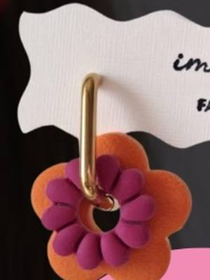

Workshop di gioielli a Torino e dintorni
Workshop per creare gioielli in argento, ottone, porcellana e altri materiali a Torino e dintorni.
Cerca tutti i workshop7 attività in programma · aggiornato il 27 ottobre 2026
 sab14novGioielliAnelli in filo: argento e ottonesabato 14 novembre, 10:00–13:30San Salvario (TO)con Manibargè
sab14novGioielliAnelli in filo: argento e ottonesabato 14 novembre, 10:00–13:30San Salvario (TO)con Manibargè
sab21novGioielliWorkshop del Carillon: orecchini in argillasabato 21 novembre, 14:30Mondovì (CN) · 30 €con ImOrecchini per Caffè il Carillon sab21novGioielliGioielli botanici: fiori veri nella resinasabato 21 novembre, 14:30–18:30Villar Perosa (TO) · 40 €con Riflessi di Casa
sab21novGioielliGioielli botanici: fiori veri nella resinasabato 21 novembre, 14:30–18:30Villar Perosa (TO) · 40 €con Riflessi di Casa dom29novCeramicaWorkshop di gioielli: kintsugi su ceramicadomenica 29 novembre, 11:00–13:00Santa Rita (TO)con Hanami Design per Anima Atelier
dom29novCeramicaWorkshop di gioielli: kintsugi su ceramicadomenica 29 novembre, 11:00–13:00Santa Rita (TO)con Hanami Design per Anima Atelier dom13dicGioielliCrea il tuo gioiello: cera persa in bronzodomenica 13 dicembre, 10:30–12:30Cuneo (CN) · da 50 €con Simona di Matteo per Atelier Crea-Arti
dom13dicGioielliCrea il tuo gioiello: cera persa in bronzodomenica 13 dicembre, 10:30–12:30Cuneo (CN) · da 50 €con Simona di Matteo per Atelier Crea-Arti dataa sceltaGioielliAnello in argento con pietra incastonataData a sceltaSan Salvario (TO) · 131 €con Spazio Incompleto Gioielli
dataa sceltaGioielliAnello in argento con pietra incastonataData a sceltaSan Salvario (TO) · 131 €con Spazio Incompleto Gioielli dataa sceltaCeramicaCorso di gioielli: porcellana e argillaData a sceltaCit Turin (TO) · 125 €con Scialabà
dataa sceltaCeramicaCorso di gioielli: porcellana e argillaData a sceltaCit Turin (TO) · 125 €con Scialabà